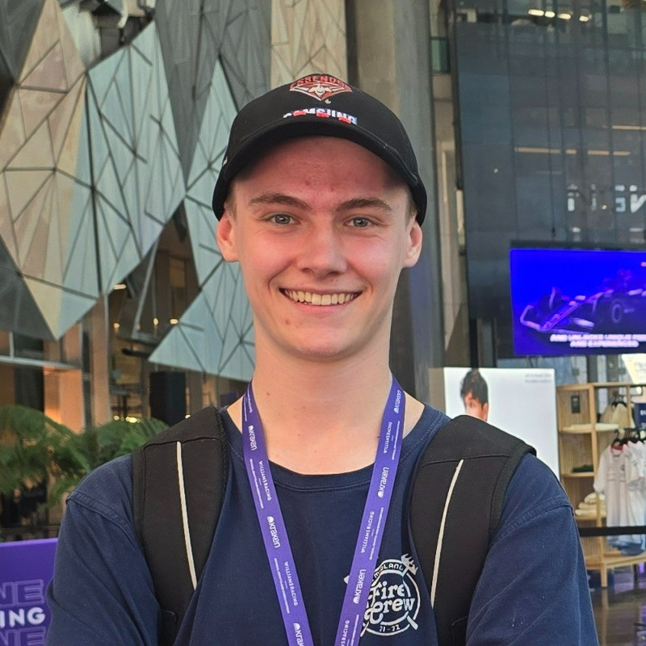

| Cadastral Surveying | GNSS | ||
| LisCAD | AutoCAD | ||
| Surveying Instruments | Photogrammetry and Drone Mapping | ||
| Cartographic Principles | Adobe Illustrator |
My Surveying-related interests include photography, working with specialised surveying equipment (eg. total stations), Cadastral Surveying, and the surveying of the natural environment. My current Surveying Capstone Project involves a deformation survey of Eildon Dam, where I am analysing the movement of the dam wall over time.
I am currently working in Cadastral Surveying as a survey assistant and I am building towards becoming a party leader and ultimately a licensed surveyor once I complete my studies.
During this subject we gain skills in the following areas:
The subject consisted of 3 assignments, one practical component involving a re-establishment survey in Parkville, and two classroom tasks involving the design of a Plan of Subdivision and another re-establishment. The main deliverables of this subject consisted of producing:
The Abstract of Field Records and Plan of Subdivision below were created using the AutoCAD software. The surveying software LisCAD.SEE was also used in this course. As these software programs are commonly used in the surveying industry, gaining experience in them has been very invaluable.
Note: If map display is too small, right-click the image and 'Open in new tab' to allow zooming of the map.
Below is two examples of the maps created in this subject, the first being the final Cartography map I created on the Falls to Hotham Alpine Crossing and the second as part of practical 2:
Note: If map display is too small, right-click the image and 'Open in new tab' to allow zooming of the map.
As a survey assistant, my experience is mostly in the field, where a field crew of two persons operate: the survey assistant and the party leader. As the survey assistant my main role in the field consists of operating the total station. This involves the setting up of the instrument, locating features at a job site via a prism pole under the party leader's instructions, locating features under own instruction with the reflectorless function, the setting up and downloading of job files in the instrument, and overall maintenance of the instrument including charging batteries and drying the instrument after use in wet conditions. A GNSS receiver is also used in the field, where the role of the survey assistant is to operate the GNSS controller while the party leader uses the GNSS receiver.
In the office my roles include making field files by compiling the resources needed for a job including resources such as plan of subdivisions, lot plans, and permanent survey mark sketches and the compiling of old job files to be scanned into the system. Experience in using LISCAD to draw up jobs has also recently started. Jobs undertaken as a survey assistant include re-establishment surveys, feature and level surveys, as-built surveys, and updating of field records.
| Cadastral Surveying | GNSS | ||
| LisCAD | AutoCAD | ||
| Surveying Instruments | Photogrammetry and Drone Mapping | ||
| Cartographic Principles | Adobe Illustrator |
 |
 |
 |
|---|---|---|
|
Work address:
109 Bedford Road, Ringwood East VIC 3135 |
Email Joel Edwards here:
s3897424@student.rmit.edu.au |
Mobile:
0431-768-472 |